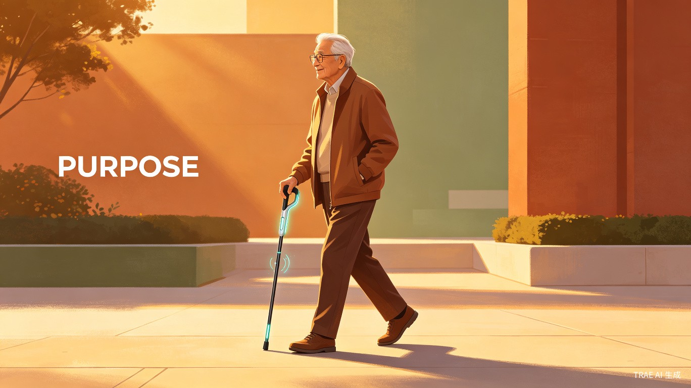
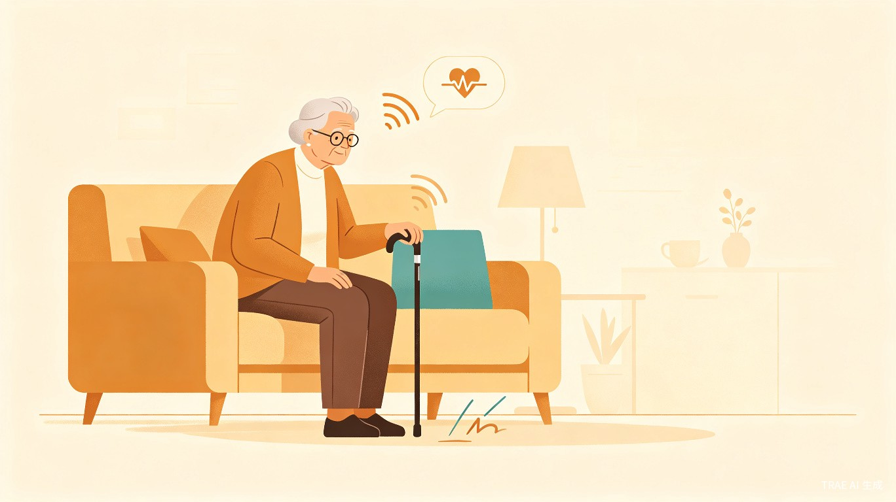
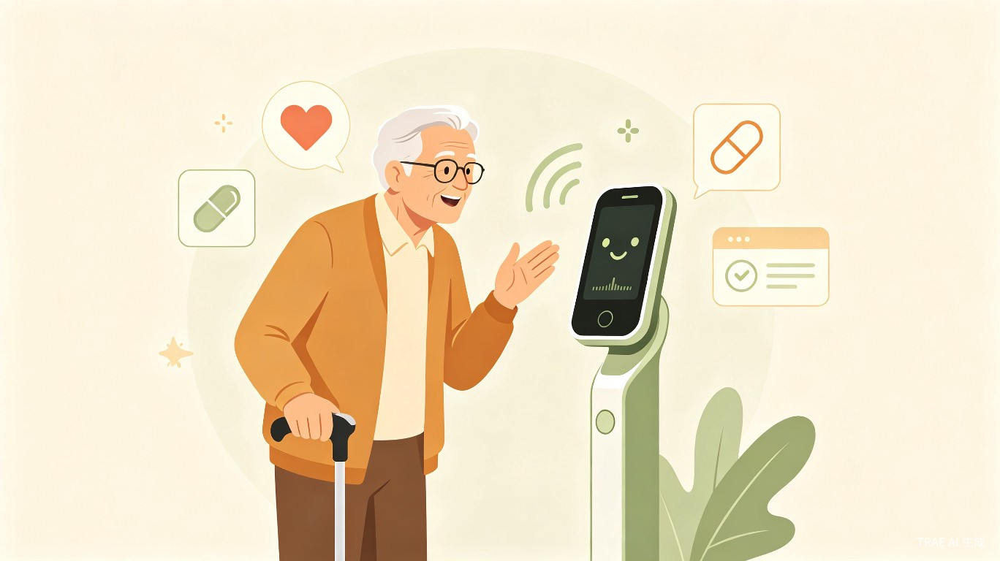
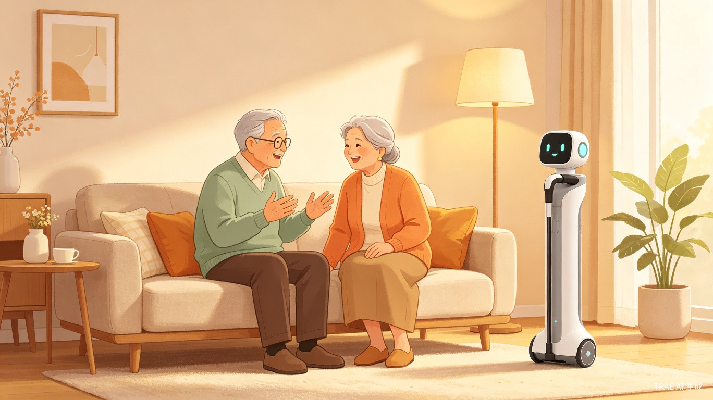
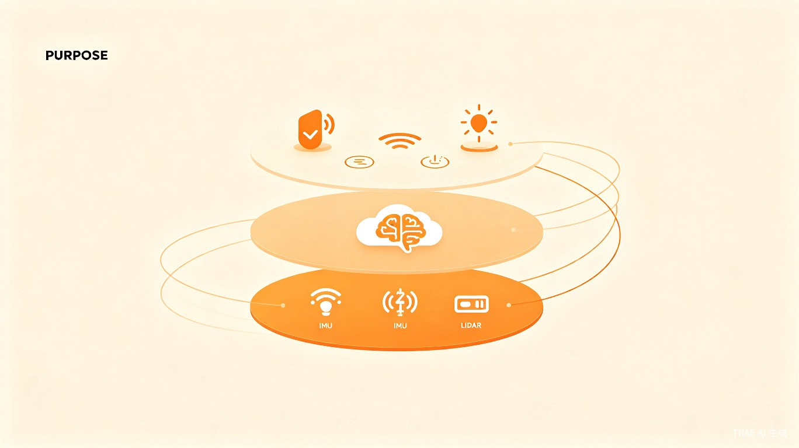

中国数亿老年人面临"安全、健康、陪伴"三大核心痛点。跌倒为65岁以上老人伤害致死首因，传统拐杖功能单一，智能设备交互复杂，均无法真正解决他们的即时困境。
科技发展日新月异，但对最需要关怀的老年群体却常常显得冰冷而疏离。团队决心抛弃冰冷的参数堆砌，用有温度、懂人心的 AI 技术重新定义"拐杖"的价值。
融合 IMU、激光雷达等多模态传感器的智能硬件，配合云端大模型实现高情商对话与场景理解，通过震动、语音、光效等多模态交互，打造无门槛的智能关怀体验。
65 岁以上老年人，特别是独居长者、行动不便者，以及关心老人安全的家庭成员。他们渴望独立生活，却又面临身体机能下降带来的种种风险。
在中国快速步入深度老龄化的今天，这一群体已超过 2.8 亿，且独居老人比例持续攀升。

日常出行：作为助行工具，提供避障提醒与步态分析。
紧急情况：发生跌倒或眩晕时，毫秒级识别并自动救援。
健康管理：身体不适时，自然对话获取初步分析与建议。
情感陪伴：主动问候、提醒作息，成为记得用户习惯的"老伙计"。

| 痛点维度 | 现状问题 | 灵犀手杖的解决方式 |
|---|---|---|
| 安全 | 跌倒后无法及时获救，延误黄金救援时间 | 毫秒级跌倒识别，自动呼叫紧急联系人并发送精准定位 |
| 健康 | 身体不适时缺乏即时、无门槛的健康咨询渠道 | 自然语音对话，云端 AI 健康模型提供初步分析与建议 |
| 陪伴 | 独居生活孤独感强烈，缺乏日常陪伴和情感关怀 | 主动问候、长期记忆对话引擎，成为有温度的"老伙计" |
| 使用门槛 | 传统智能设备操作复杂，老年人难以独立使用 | 多模态交互（震动+语音+光效），直观自然、无需学习 |
产品价值通过三大核心场景生动体现，形成从"感知-决策-交互"的闭环式关怀体系。
当使用者发生跌倒或出现眩晕等高风险状态时，手杖通过高精度传感器 毫秒级识别。它不会制造恐慌，而是先以温和语音询问，若无响应，则自动呼叫紧急联系人并发送精准定位，实现从"被动支撑"到"主动救援"的飞跃。
老人如感到不适，可直接与手杖进行 自然对话。基于云端 AI 的健康模型，它能提供初步分析与暖心建议，并能语音助手完成常规药品复购，打造"咨询-提醒-服务"的健康闭环。
手杖能主动问候、提醒作息，并通过蕴含 长期记忆 的对话引擎，成为记得用户习惯与偏好的"老伙计"，有效缓解孤独感。

实现上述体验，依赖于独创的"端-云协同"三层智能架构：

以"科技向善"回应深度老龄化社会的迫切需求，为老年人提供"自主、尊严与安全"的保障。有效降低老年人跌倒致死率，缓解独居老人的孤独感，构建连接用户、家庭与社区服务的智能关怀网络。
采用"智能硬件入口 + 软件服务订阅 + 健康生态协同"的可持续商业模式。通过差异化硬件套件覆盖多元场景，以健康报告、精准定位、高级 AI 陪伴等订阅服务创造长期价值。
将传统"被动响应"的养老模式升级为"主动预防"。从跌倒后的紧急救治前置为风险预警，从繁琐的健康管理简化为自然对话，大幅提升老年人生活自理能力与家庭照护效率。
灵犀手杖销售的不仅是一件产品，更是一份关于"自主、尊严与安全"的承诺。在科技向善的时代命题下，致力于用这根有温度的拐杖，支撑每一位长者更从容、更安心的生活。
"我们旨在构建一个连接用户、家庭与社区服务的智能关怀网络。在科技向善的时代命题下，灵犀手杖团队致力于用这根有温度的拐杖，支撑每一位长者更从容、更安心的生活，支撑起一个更具人文关怀的未来。" —— 灵犀手杖团队
灵犀手杖，不止于拐杖。它是全天候的安全守护、健康顾问与情感伴侣，是每一位长者身边值得信赖的"智能家人"。